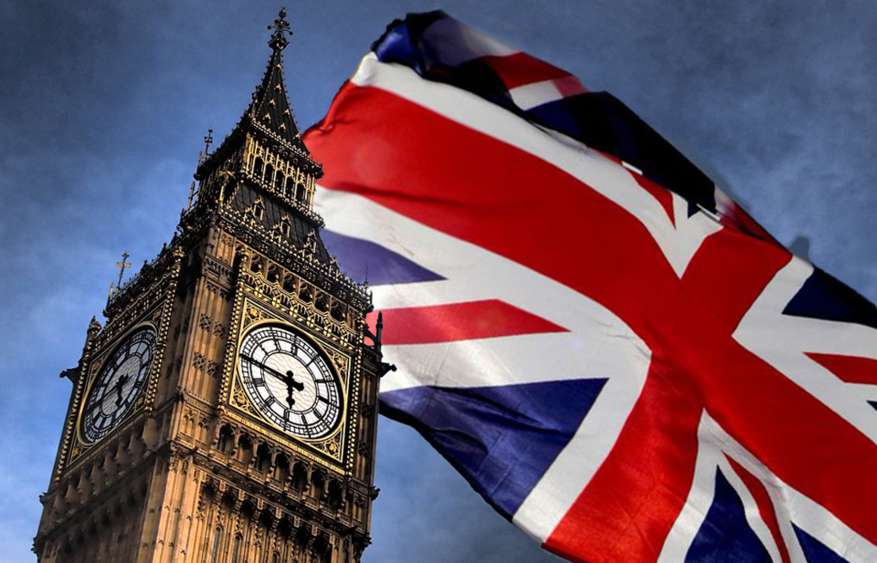
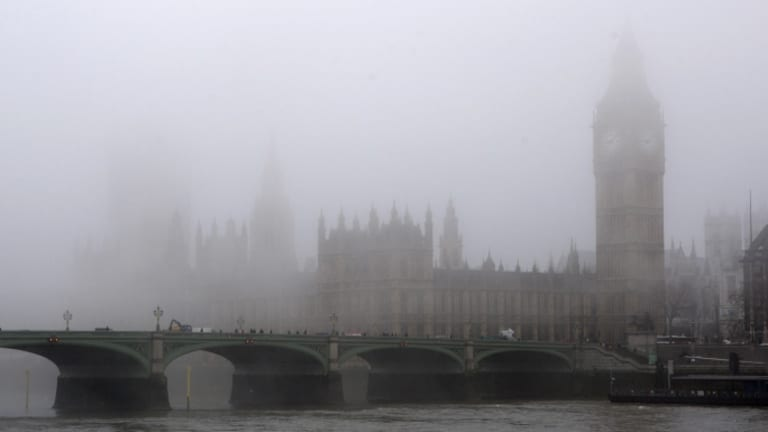

Великобритания
Великобритания — островное государство в Западной Европе, расположенное на Британских островах. Площадь крупнейшего острова (Великобритания) составляет ок. 230 000 км2. Кроме того, в состав страны входят северо-восточная часть о. Ирландия (14 200 км2),
о-ва Англси (715 км2), Уайт (381 км2), Мэн (572 км2), а также архипелаги: Гебридские (ок. 500 о-вов; 7300 км2), Оркнейские (более 70 о-вов; 975 км2), Нормандские (8 о-вов; 195 км2), Шетландские острова (ок. 100 о-вов; 1400 км2) и острова Силли
(ок. 50 о-вов; 15,5 км2). Западное побережье омывают воды Атлантического океана, а восточное и южное — Северное море и неширокие проливы Ла-Манш и Па-де-Кале. Береговая линия сильно расчленена — в сушу вдаются многочисленные заливы, самые
крупные из которых — Бристольский, Кардиган, Ливерпульский, Ферт-оф-Клайд, Мари- Ферт, Ферт-оф-Форт, а также эстуарии Темзы и Северна.

Древние горные массивы
Территория Великобритании чётко делится на горно-возвышенную и равнинную части. Почти целиком Британские острова расположены в зоне каледонской (силур — девон) складчатости, только южнее линии Бристоль — Лондон развиты складки герцинской (кар- бон —
пермь) системы. В Шотландии, Северной Ирландии, Уэльсе и Северной Англии преобладают средневысотные горы и возвышенности с выровненной вершинной поверхностью и глубоко врезанными речными долинами, в формировании рельефа которых значительную
роль сыграли вертикальные тектонические движения. Наиболее высоко расчленён рельеф Шотландии (Северо-Шотландское нагорье и Южно-Шотландская возвышенность, разделённые Среднешотландской низменностью). Над поверхностью нагорья возвышаются
хребты с вершинами альпийского типа (в т. ч. высшая точка Великобритании — Бен-Невис (1343 м) в Грампианских горах). Южнее Шотландии расположены Пеннинские горы (высшая точка — Кросс-Фелл (893 м)). Кембрийские горы (Сноудон (1085 м)) занимают
Уэльс, а на п-ове Корнуолл расположен ряд остан- цевых возвышенностей (высоты 500-600 м), разделённых всхолмлёнными низменностями. На юго- востоке Англии плоские низменности чередуются с возвышенными плато и известняковыми и меловыми грядами
(Котсуолд, Чилтерн, Норт-Даунс, Саут-Даунс), низменностями Мидленд, Фенн, Лондонским бассейном.Больше!;\тлас’к'Мира518

Туманы
Великобритания расположена в умеренном поясе Европы.Огромное влияние на погоду оказывает море — самые отдалённые пункты отстоят от него на 40-60 км, а в южной части — на 100—120 км.Климат отличается умеренными температурами (зимой столбик термометра
редко (кроме гор) опускается ниже 0°С), обилием атмосферных осадков, неустойчивой погодой циклонального типа с частыми и сильными ветрами. Характерным элементом британской погоды являются густая облачность и туманы.

Реки и озёра
Великобритания обладает густой сетью полноводных на протяжениивсего года и довольно коротких рек (Северн, Темза, Уз, Тис, Тайн,Иден, Туид и др.). Самая длинная река — Темза (338 км). Питающиеся преимущественно дождями реки зимой не замерзают, многие
соединены судоходными каналами. Судоходству благоприятствует проникновение в низовья рек высоких приливов. Больше всего озёр (в основном ледникового и тектонико-ледникового происхождения (Лох-Несс, Лох-Ломонд)) расположено в Шотландии.
Самое крупное озеро Великобритании — Лох-Ней (Северная Ирландия; площадь 396 км2).
Верещатники и торфяники
Изначальной растительной формацией Британских островов были на сегодня в значительной мере сведённые лиственные равнинные (дуб, бук, ясень, берёза) и горные хвойные леса. Леса занимают ок. 6% территории Великобритании, а основные их массивы сосредоточены
в восточных и южных районах. Распространены лесные и парковые искусственные насаждения. Повсеместно характерны луга, торфяники и верещатники — особенно на п-ове Корнуолл и в графстве Йорк (Восточная Англия). Лесная фауна очень бедна, лучше
представлена фауна открытых пространств. Наиболее характерные виды: лиса, заяц, белка, ёж и др.Под угрозой исчезновенияЭКСКУРС В ИСТОРИЮВыгодное географическое расположение на Северо-Западе Европы и открытость в сторону Атлантического
океана определили судьбу Великобритании как великой морскойдержавы, а островное положение сыграло важную роль в обороноспособности страны. В IX—XI вв. Британские острова подвергались частым нападениям викингов — грозы средневековой Европы.
После битвы при Гастингсе (14 октября 1066 г.) Англия была завоёвана нормандским герцогом Вильгельмом, который стал королём Англии под именем Вильгельм I Завоеватель и основал новую, Нормандскую, династию. Единым государством Великобритания
стала в 1707 г., после унии Англии (в состав которой уже входил покорённый в конце XIII в.Уэльс) и Шотлан-Сельское хозяйство Великобритании, в которомзанято всего лишь 2% трудоспособного населения страны, на 60% удовлетворяет внутренниепотребности
в продовольствии. А необычайноухоженные английские сёла напоминают скореенебольшие городаоказалась рыжая белка,вытесняемаязавезенной из Америки серой белкой.

Эксурс в иторию
Выгодное географическое расположение на Северо-Западе Европы и открытость в сторону Атлантического океана определили судьбу Великобритании как великой морскойдержавы, а островное положение сыграло важную роль в обороноспособности страны. В IX—XI вв.
Британские острова подвергались частым нападениям викингов — грозы средневековой Европы. После битвы при Гастингсе (14 октября 1066 г.) Англия была завоёвана нормандским герцогом Вильгельмом, который стал королём Англии под именем Вильгельм
I Завоеватель и основал новую, Нормандскую, династию. Единым государством Великобритания стала в 1707 г., после унии Англии (в состав которой уже входил покорённый в конце XIII в.Уэльс) и Шотландии. В 1801 г. к унии присоединилась Ирландия.
Когда в 1921 г. Ирландия провозгласила независимость, шесть северо-восточных графств «Изумрудного острова» остались в составе Великобритании (Ольстер). Ведя завоевательные войны и колонизуя колоссальные территории в Америке, Африке, Азии,
Австралии и Океании, располагая значительным экономическим потенциалом, торговым и военным флотами, Британия превратилась в огромную колониальную империю, площадь которой в начале XX в. превышала 30 000 000 км2.

Промышленность и демократия
В середине XVIII в. на Британских островах началась промышленная революция. Благодаря разработке неглубоко залегающих пластов каменного угля и железной руды возникли предпосылки для развития современной металлургии и тяжёлой промышленности. По всей
стране вырастали металлургические, литейные и прокатные предприятия, на которых производились первые в мире паровые котлы,локомотивы, металлические изделия различного назначения. В 1779 г. через реку Северн был переброшен первый в мире
цельнометаллический (железный) мост— символ английской промышленной революции, а в 1825 г. начала действовать первая в мире Стоктон-Дарлингтонская железная дорога. Именно в Великобритании были заложены основы современной демократии. «Великая
хартия вольностей», подписанная в 1215 г. королём Иоанном Безземельным и регулирующая взаимоотношения между короной и подданными, а также акт 1679 г. «Хабеас корпус»(.НаЪеа$ Согриз Ас1), запрещавший арест свободного гражданина без решения
суда, стали краеугольными камнями современного права.Со времён короля Вильгельма III Оранского (правил в 1689-1702 гг.) в Британии победила парламентская система, а всю исполнительную власть осуществляет правительство (кабинет министров).

Религиозный конфликт
Тяжёлым бременем для внутренней политики современной Великобритании является незатухающий десятилетиями религиозный конфликт в Северной Ирландии, где католическое меньшинство ведёт борьбу за равноправие с протестантским большинством. Активное участие
в борьбе принимают экстремисты с обеих сторон, в т. ч. подпольная Ирландская республиканская армия (/ДА), политическим крылом которой является партия «Шин- фейн» (ирл. 5тп Рещ букв. — «мы сами»). Масла в огонь подливают сами протестанты,
оскорбляя национальные чувства католиков демонстративным празднованием своей победы в битве на реке Бойн (1690 г.). В 1969 г. конфликт обострился до такой степени, что автономия провинции была упразднена (1972 г.), а на территорию Северной
Ирландии вступили британские войска. В апреле 1998 г. стороны конфликта подписали перемирие, позволяющее надеяться на урегулирование многолетнего противостояния и нормализацию политической ситуации.